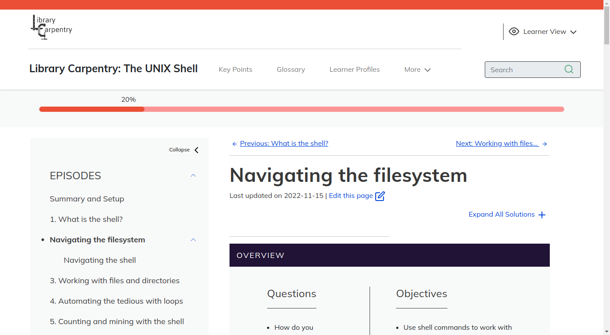
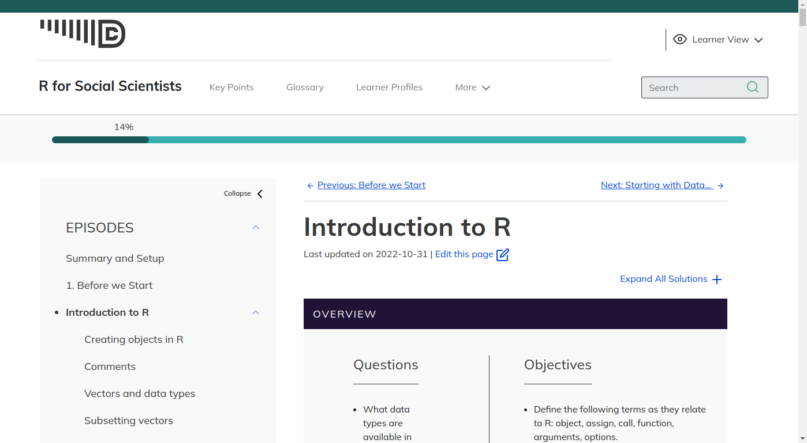
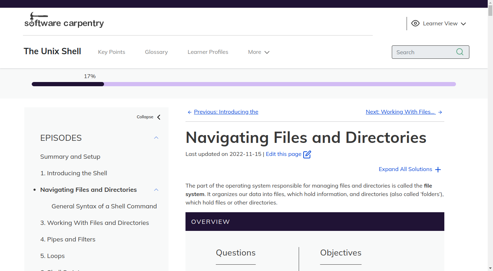
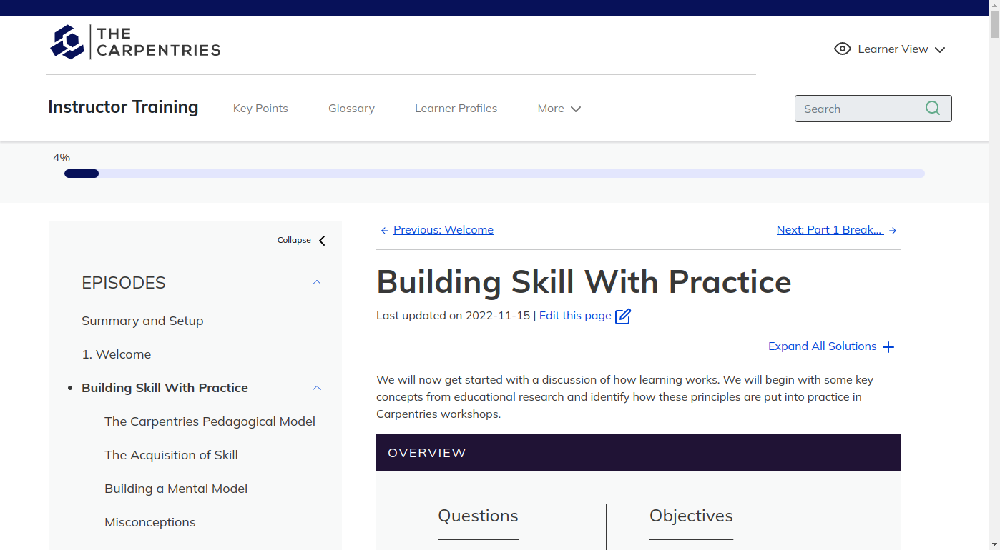

The Carpentries Workbench
An accessible lesson infrastructure built in R
We are in the process of transitioning our official lessons to use The Carpentries Workbench. Find out more in our Transition Schedule
The Workbench is a complete redesign of The Carpentries lesson websites, with new features prioritising accessibility and navigation. All Carpentries lessons will begin using The Carpentries Workbench in May 2023.

   
Resources
Usage
To preview a lesson that uses The Workbench, open R (or RStudio), install The Workbench, and run the following command to start a live preview that will update while you edit:
sandpaper::serve()To preview a lesson that uses The Workbench, make sure you install The Workbench, and run the following command to start a live preview that will update while you edit:
R -e 'sandpaper::serve(quiet = FALSE, port = "3435")'You can then open your browser to http://localhost:3435 preview your lesson as you edit.
For more guidance on The Workbench, including how create a new lesson, run accessibility tests, and more, consult our Guides
Installation
To install the workbench, make sure you have a working version of R and pandoc/RStudio installed (see the workbench setup instructions for details).
From there, you can install the workbench packages and their dependencies from our Carpentries R Universe:
install.packages(c("sandpaper", "varnish", "pegboard", "tinkr"),
repos = c("https://carpentries.r-universe.dev/", getOption("repos")))Updating
To update workbench packages, you can use the same command as you did to install your packages:
install.packages(c("sandpaper", "varnish", "pegboard", "tinkr"),
repos = c("https://carpentries.r-universe.dev/", getOption("repos")))Guides
- Glossary A glossary of terms for The Workbench.
- Official Workbench Documentation: written using The Workbench, this guide provides everything you need to get started using The Workbench.
- Collaborative Lesson Development Training: Material for a three day workshop teaching good practices in lesson design and open source collaboration skills
Tools
- {sandpaper}: User interface and engine for the workbench
- {pegboard}: Validation and parsing of lesson components
- {varnish}: HTML, CSS, and JavaScript templates
- (carpentries/actions): GitHub Actions for Workbench Workflows
- (carpentries/lesson-transition): Tool for automated transition from styles-based lessons to Workbench.
Templates
Inspired Examples
These are examples of lessons developed with The Workbench since the initial announcement:
- Toby Hodges, Mateusz Kuzak, Aleksandra Nenadic, Sarah Stevens—Collaborative Lesson Development Training
- Saranjeet Kuar, Achintya Rao, Heather Turner, Aman Goel—R’s Bug Tracking
- Saba Ferdous, David Pérez-Suárez—Learn To Discover—Basic Python (note—this uses a custom fork of sandpaper, and varnish to run python)
- Philipp Matthias Schäfer—GitLab Novice
- Michael Culshaw-Maurer—Rewrite of the R Ecology Lesson